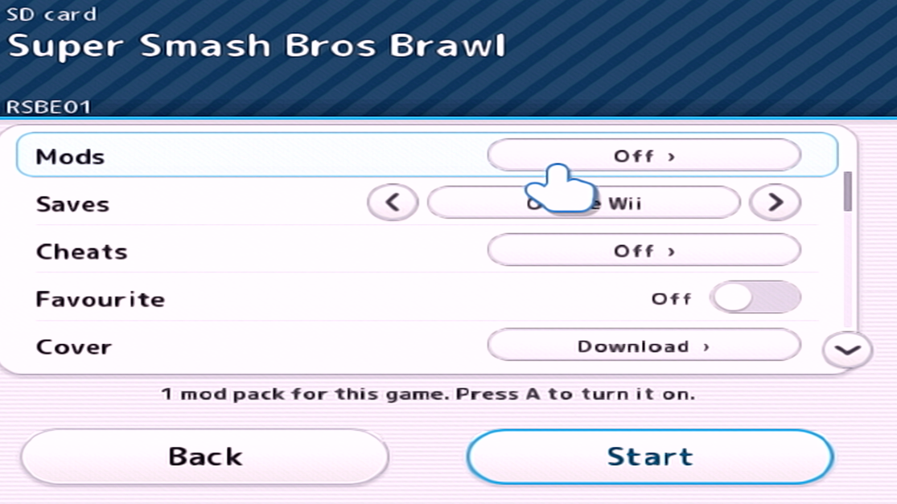
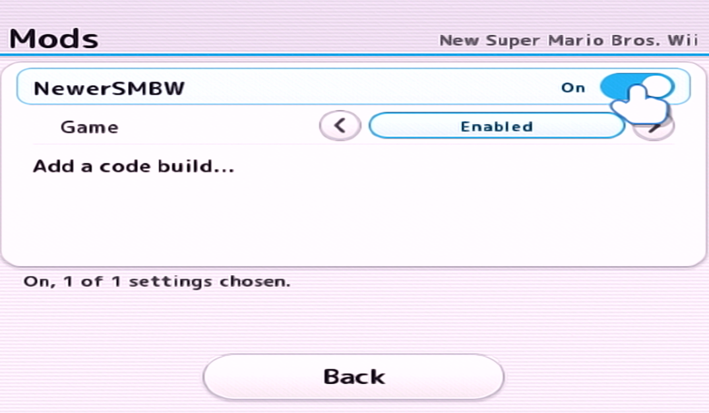
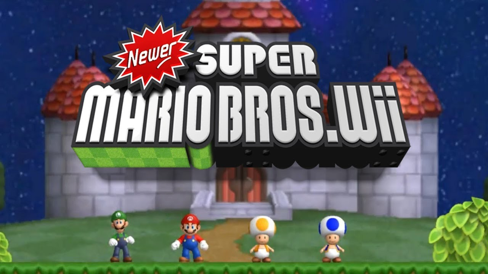
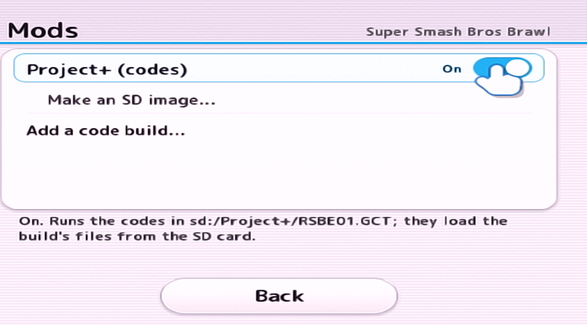
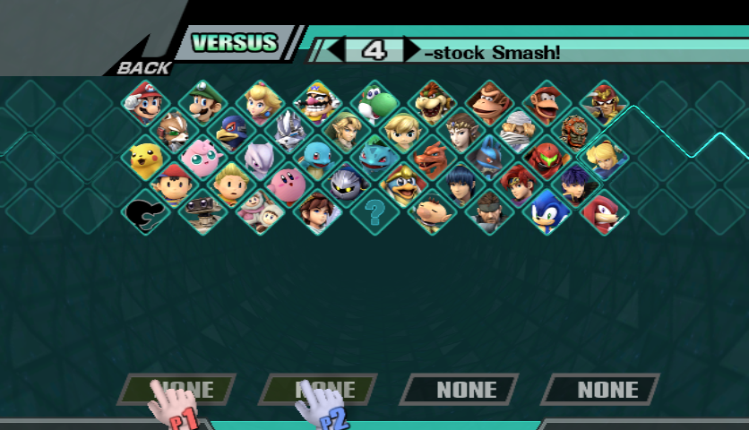
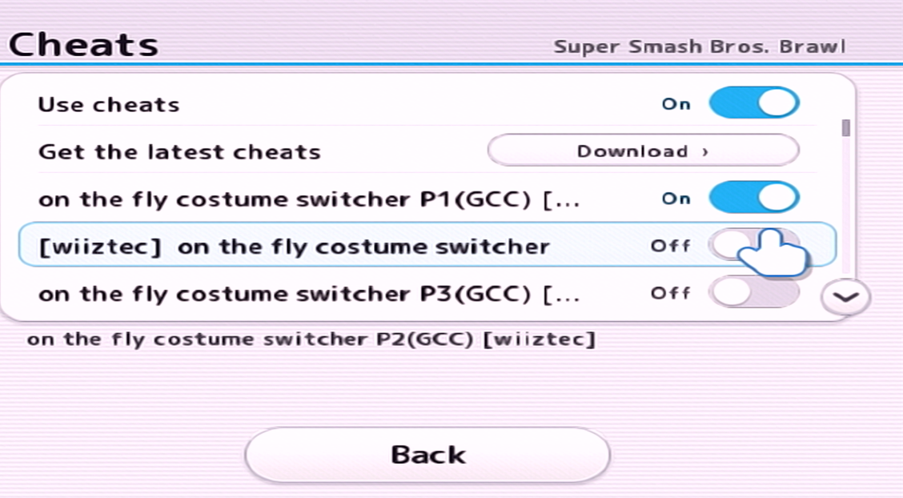
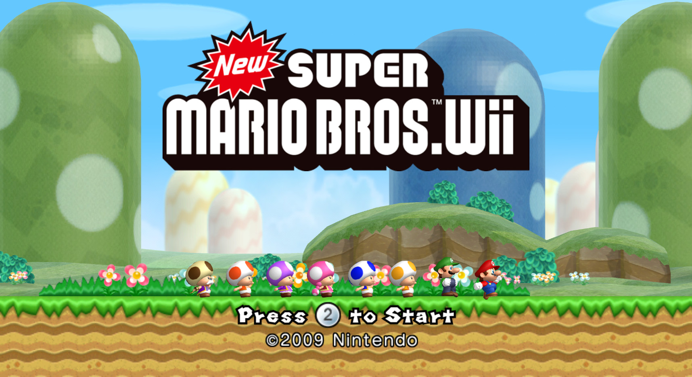

← Back to RiftWii
MOD INSTALLATION
Installing Mods
RiftWii supports installing multiple mod types, whether that be:
- Riivolution-Format Mods like Newer Super Mario Bros. Wii or Retro Rewind
- Gecko Code Builds like Project+
- Cheat Codes
RiftWii supports it all! With the exception of CTGP-R 1.03 being experimental at the time of writing this.
Click to Install Riivolution-Format Mods
Click to Install Gecko Code Builds
Click to Install Cheat Codes
RIIVOLUTION FORMAT
Installing Riivolution-Format Mods
Riivolution-Format mods include mods such as Newer Super Mario Bros. Wii and Retro Rewind.
Step 1
Copy your mod folder to the root of your SD Card or USB Drive, and the .xml file to the Riivolution folder. It should look like this:
/apps
/[MOD NAME FOLDER]
/Riivolution
- MOD NAME.xml
Step 2
Go into the RiftWii Settings of your game, and select mods

Step 3
Turn on the mod you want to use:

Step 4 - Launch and Play
Go back and start the game. Enjoy!

GECKO CODE BUILDS
Installing Gecko Code Builds
This section will explain how to install Gecko Code Builds such as Project+ and REX.
Note: If your SD Card is bigger than 32GB, or you want to store mods on your USB Device, follow the Virtual SD Card Guide instead:
Using Virtual SD Cards
Step 1
Put your mod files onto the root of your SD Card. It should look like:
/apps
/codes
/[MOD NAME FOLDER]
Note: It has to be on the SD Card or your mod will not work.
Step 2
Go into the RiftWii Settings of your game, and select mods
Step 3
Turn on the mod that you have chosen. If it doesn't automatically detect a mod, select Add a code build... and locate the [GAME CODE].gct file on your SD Card (in this case, it's Smash Brawl, so it's RSBE01.gct)

Step 4 - Launch and Play
Go back and start the game. Enjoy!

CHEAT CODES
Installing Cheat Codes
This section will explain how to install and use Cheat Codes with RiftWii.
Step 1
Open the cheats menu, and select the cheats you want to enable

Step 2 - Launch and Play
Go back and start the game. Enjoy!

Notice:
If you don't have internet, you have to download the cheats manually from gamehacking.org, and then activate them with the cheats menu.
Download Cheat Codes Manually